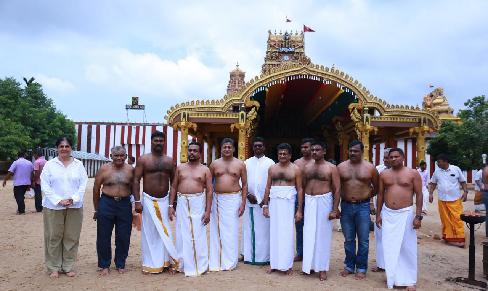
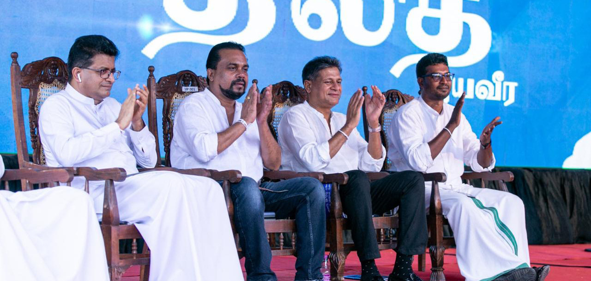
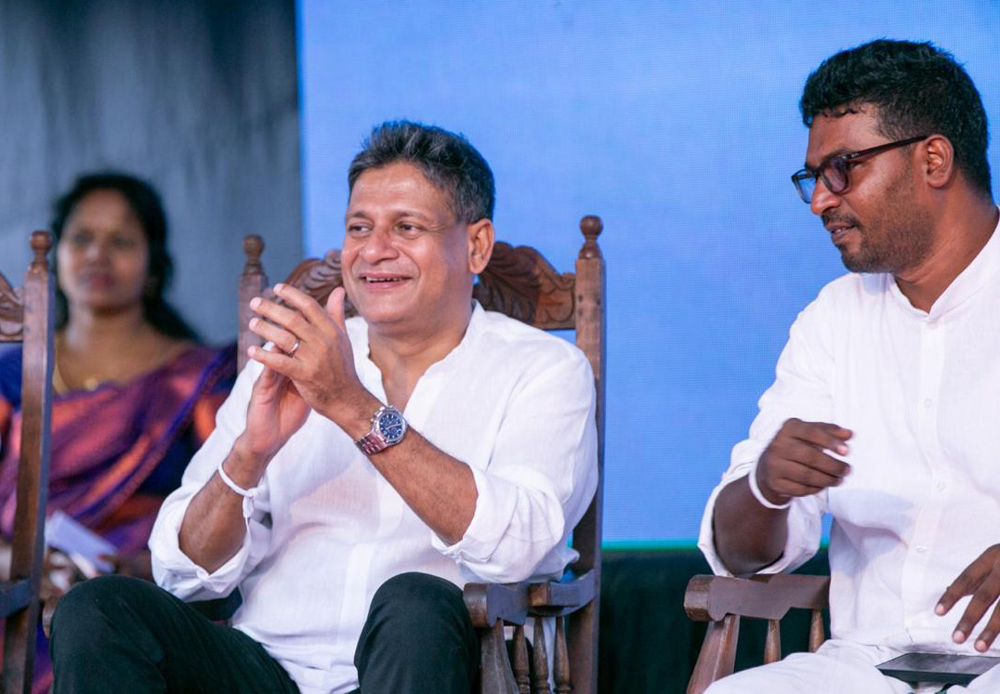

"Starting Our Campaign in Jaffna Was the Right Decision"
"Starting Our Campaign in Jaffna Was the Right Decision"
Jaffna Monitor hellojaffnamonitor@gmail.com 33 D ilith Jayaweera, one of Sri Lanka's most prominent billionaires, media moguls, and successful entrepreneurs, and the president of the Mawbima Janatha Party has officially entered the presidential race as the candidate of the Sarvajana Balaya alliance—a coalition often characterized as an alliance of Sinhala hardliners. In a move that surprised many, Jayaweera, along with his coalition of seven parties—including the Mawbima Janatha Party led by Jayaweera himself, the National Freedom Front led by MP Wimal Weerawansa, Pivithuru Hela Urumaya led by MP Udaya Gammanpila, the Democratic Left Front led by MP Vasudewa Nanayakkara, the Communist Party led by G. Weerasinghe, the Yuthukama National Organisation led by MP Gevindu Kumaratunga, and the collective of Independent MPs represented by MP Channa Jayasumana—chose to launch his election campaign in the heart of Sri Lankan Tamil culture: Jaffna. – Dilith Jayaweera BY: Our Reporter "Starting Our Campaign in Jaffna Was the Right Decision" JAFFNA Dilith Jayaweera

Jaffna Monitor hellojaffnamonitor@gmail.com 34 During the visit, Dilith Jayaweera, along with Udaya Gammanpila and Wimal Weerawansa, paid a visit to the historic Nallur Temple in Jaffna, accompanied by Arun Siddharth, the Mawbima Janatha Party's Jaffna organizer. Siddharth, who has a controversial history with the Nallur Temple, added an intriguing layer to the visit. However, the bare-chested photos of the group in the temple vicinity quickly went viral on social media, sparking a meme frenzy. Jayaweera's candidacy has attracted significant attention because of his pivotal role in Gotabaya Rajapaksa's 2019 presidential campaign, where his strategic media influence played a crucial part. We sat down with him in Jaffna to gain insights into his decision to enter the presidential race. Here are some excerpts from our conversation. What motivated you to enter this presidential race? The people of Sri Lanka have resoundingly articulated their demand for change—they've battled relentlessly for it. After enduring decades of stagnation with the same faces entrenched in Parliament, they're no longer content with empty promises. There is nothing truly innovative among all the candidates except for me. The other contenders have wielded power before, yet they have failed to deliver the transformation our nation desperately needs. We're here to offer exactly that—a meticulously crafted plan designed to usher in meaningful, positive change for everyone. Do you regret playing a key role in bringing Gotabaya Rajapaksa to power? There are indeed certain decisions I profoundly regret. Chief among them was my failure to foresee the overwhelming influence of the Rajapaksa family over him, an influence that ultimately led to his downfall. I never anticipated that the family would wield such control, stifling his ability to execute his own vision. This was a significant misjudgment on my part, one I regret deeply. In hindsight, it's clear how naive I was to believe he could navigate his role independently of his family's grip. That was my error. The harsh truth is that it was the family who orchestrated his downfall because he dared to diverge from their corrupt and self-serving path. When I speak of the family, I include Namal Dilith Jayaweera, Wimal Weerawansa, Udaya Gammanpila, Anuradha Yahampath, and others in front of Nallur Kandaswamy Temple in Jaffna

Jaffna Monitor hellojaffnamonitor@gmail.com 35 Rajapaksa, SLPP's current presidential candidate, in that assessment. There are accusations from both the Tamil and Sinhala people that your alliance is bringing together Sinhala hardliners in support of your candidacy. How do you respond to this? This is where the misunderstanding lies. Who exactly are these so-called Sinhala hardliners? Am I one of them? I am one of the most moderate people you'll meet, deeply rooted in the principles of Buddhism. Buddhism teaches that one's worth is not determined by birth. As the Buddha said, "Not by birth is one a Brahmin or an outcast; by deeds is one a Brahmin, by deeds is one an outcast." I believe in this principle wholeheartedly, rejecting all forms of discrimination. So, how can I be labelled a Sinhala hardliner? We are all human beings, and I believe Sri Lanka can rise above divisions and live in harmony. Guided by the principles of Buddhism, we are in a unique position to move forward together. Are you a strong Buddhist simply because you were born into it? No, not at all. Until I was about 16, I actually identified as a communist. My father was a communist, so I was influenced by those ideas. However, I wasn't truly an atheist because I was raised in a traditional Buddhist village environment. As I grew older, I became more of a nationalist, with my beliefs being strongly influenced by Buddhism. My journey to becoming a stronger Buddhist was a gradual process shaped by my experiences and evolving beliefs, not merely by the circumstances of my birth. Why did you start your campaign in Jaffna, a place considered the heart of Sri Lankan Tamils? It's crucial to make one thing clear: certain international parties seem intent on dividing this country along ethnic lines, which I strongly oppose. This divisive mindset is completely at odds with the philosophy of Buddhism, which rejects division based on caste, religion, ethnicity, or creed. If anyone attempts to divide us in such a way, I consider it profoundly unjust. You can distinguish us by height, weight, or wealth—those are superficial differences— but creating divisions based on the notion that some people are inherently superior due to their birth is something I cannot accept. We chose to launch our campaign in Jaffna and stand alongside Arun Siddharth, our party's Jaffna organizer, because he genuinely believes in equality and has been a staunch opponent of the caste system. I want to From left to right: Udaya Gammanpila, Wimal Weerawansa, Dilith Jayaweera, and Mawbima Janatha Party's Jaffna organizer Arun Siddharth at the Sarvajana Balaya alliance's first campaign in Jaffna.

Jaffna Monitor hellojaffnamonitor@gmail.com 36 convey to the Tamil community—though I dislike the term "minority" as it implies division—that you are not a minority. We are all equal, part of one united nation. I was genuinely pleased with how the campaign went. The warmth and affection I received from the people were truly heartening. It confirmed that starting our campaign in Jaffna was indeed the right decision. If you don't see Tamils as a minority, how do you view them? I see Tamils as an integral part of Sri Lanka's soul, woven into the very fabric of our national identity. When I visited the Nallur Temple, I felt a deep connection, as if it was very much a part of me. There was no sense of division or difference. Isn't that a beautiful feeling? This is the message I want to share— that we are all connected, part of the same whole, and that our strength as a nation lies in this unity. Do you have any issues with the Tamil community? Absolutely not. How could I possibly have a problem with Tamils? My concern is not with the Tamil community but with extremists—regardless of their ethnicity. One of the core teachings of the Buddha is compassion. Without compassion, you cannot truly call yourself a Buddhist. Being born into Buddhism is not enough; you must live by its principles. As someone who firmly believes in Buddhism, if I don't have compassion for every single being—regardless of their ethnicity—then I am not living up to the true essence of Buddhism. In this context, how could I possibly have an issue with Tamils? Compassion is central to my beliefs, and it guides my interactions with everyone. My focus is on fostering understanding and unity, not division. That's why I reject extremism in all its forms and why I am committed to building bridges between communities, not walls. Will your decision to kickstart the election campaign in Jaffna resonate well with the Sinhala community? Absolutely. The Sinhala community is incredibly open-minded and embracing. We are free thinkers with a liberal approach to life, deeply influenced by the inclusive philosophy of Buddhism, which encourages justice, compassion, and understanding. There are no restrictions on doing what is right and good, and reaching out to all corners of our nation aligns perfectly with these values. The divisions we observe today are largely vestiges of historical interventions, particularly those orchestrated by Western colonial powers intent on creating deep fissures between the North and South, Tamils and Sinhalese, Hindus and Buddhists. Regrettably, there are still calculated efforts to perpetuate these divisions, using modern tools and tactics to manipulate and fracture our communities for ulterior motives. But we have overcome this. Within our association, Tamils feel entirely at ease and deeply integrated. You can speak to them directly—they will affirm how comfortable and secure they are within our unified movement. When I visited Jaffna, I felt no sense of insecurity or threat; instead, I encountered warmth and a profound sense of unity.

Jaffna Monitor hellojaffnamonitor@gmail.com 37 That said, I have observed that some Tamil politicians exhibit racist tendencies. In the spirit of national unity and reconciliation, I won't name them—some are even my friends. It's important to note that this racism doesn't stem from genuine belief but is often a facade for their political gain. For example, certain Tamil MPs who were born and raised in Colombo, educated alongside diverse communities, travel to Jaffna to propagate divisive rhetoric. They utilize this form of political racism not out of true conviction but as a tool for ugly politics, aiming to stir emotions and secure votes by exploiting historical wounds. By starting our campaign in Jaffna, we wanted to demonstrate our commitment to inclusivity and show that we stand against all forms of divisiveness, whether they come from external forces or internal politics. Our goal is to build a Sri Lanka where every community feels valued, respected, and integral to the nation's fabric. How confident are you about winning? I'm very confident. At this moment, 40% of the electorate is still undecided—that's a significant portion of the vote. I recently spoke with some tuition masters, and they mentioned that when they asked their students, who are first-time voters, about their voting intentions, most of them said they haven't decided yet. I'm working hard to secure those undecided votes. Your shirtless photos at the Nallur Temple went viral. What are your thoughts on that? Those were some of the happiest moments of my life, and they sent a very powerful message. Udaya Gammanpila and Wimal Weerawansa have been unfairly labelled as racists, but I've always maintained that they are not. They accompanied me to the temple, and I believe those photos have helped shift the narrative. The images conveyed a strong message of unity and respect for all cultures. It was a moment of connection rather than division, and I'm glad it resonated with so many people.
